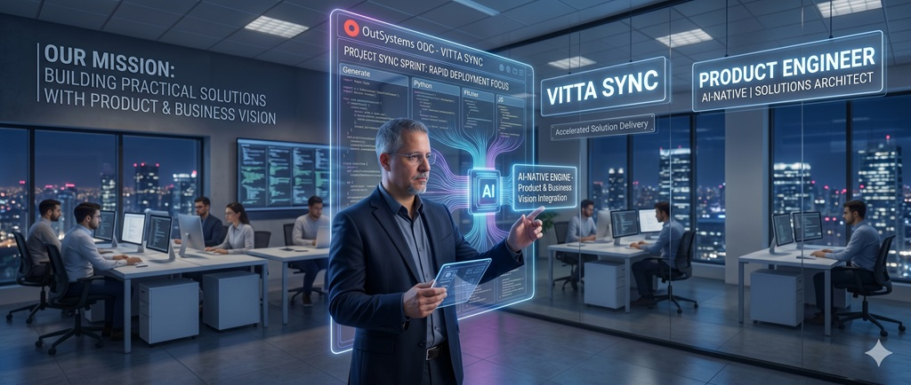
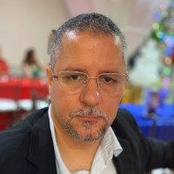

<!DOCTYPE html>
<html lang="pt-PT">

<head>
    <meta charset="UTF-8">
    <meta name="viewport" content="width=device-width, initial-scale=1.0">
    <title>Rahman Brussolo | Product Engineer AI-Native | Solutions Architect</title>
    
    <!-- SEO Meta Tags -->
    <meta name="description" content="Rahman Brussolo: Product Engineer AI-Native & Solutions Architect com 25 anos de experiência. Especialista em OutSystems, Orquestração de Agentes de IA e DevOps.">
    <meta name="keywords" content="Rahman Brussolo, Product Engineer, AI-Native, OutSystems Expert, Solutions Architect, DevOps, SRE, Portugal, Tech Leadership">
    <meta name="author" content="Rahman Brussolo">
    <link rel="canonical" href="https://thander21.github.io/Rahman-Brussolo---Product-Engineer-AI-Native/">

    <!-- OpenGraph (LinkedIn, WhatsApp, Facebook) -->
    <meta property="og:title" content="Rahman Brussolo | Product Engineer AI-Native">
    <meta property="og:description" content="25 anos de engenharia e estratégia técnica. Especialista OutSystems e Orquestração de IA.">
    <meta property="og:image" content="https://raw.githubusercontent.com/Thander21/Rahman-Brussolo---Product-Engineer-AI-Native/main/Banner.jpg">
    <meta property="og:url" content="https://thander21.github.io/Rahman-Brussolo---Product-Engineer-AI-Native/">
    <meta property="og:type" content="website">

    <!-- Structured Data (JSON-LD) for Search Engines -->
    <script type="application/ld+json">
    {
      "@context": "https://schema.org",
      "@type": "Person",
      "name": "Rahman Brussolo",
      "jobTitle": "Product Engineer AI-Native & Solutions Architect",
      "url": "https://thander21.github.io/Rahman-Brussolo---Product-Engineer-AI-Native/",
      "sameAs": [
        "https://linkedin.com/in/rahman-brussolo",
        "https://github.com/Thander21"
      ],
      "knowsAbout": ["OutSystems", "Artificial Intelligence", "DevOps", "Software Architecture", "SRE"]
    }
    </script>

    <link href="https://fonts.googleapis.com/css2?family=Inter:wght@300;400;500;600;700;800&display=swap"
        rel="stylesheet">
    <style>
        :root {
            --primary: #0f172a;
            --accent: #2563eb;
            --accent-soft: #eff6ff;
            --glass: rgba(255, 255, 255, 0.85);
            --border: rgba(226, 232, 240, 0.8);
            --text-main: #1e293b;
            --text-muted: #64748b;
            --sidebar-bg: #f8fafc;
        }

        * {
            box-sizing: border-box;
            -webkit-print-color-adjust: exact;
            print-color-adjust: exact;
        }

        body {
            font-family: 'Inter', sans-serif;
            color: var(--text-main);
            background-color: #f1f5f9;
            margin: 0;
            padding: 20px 0;
            line-height: 1.6;
            letter-spacing: -0.01em;
        }

        .cv-page {
            max-width: 1000px;
            margin: 0 auto;
            background: white;
            border-radius: 24px;
            box-shadow: 0 40px 100px -20px rgba(0, 0, 0, 0.15);
            overflow: hidden;
            position: relative;
        }

        .hero-banner {
            width: 100%;
            height: 240px;
            background: var(--primary);
            position: relative;
        }

        .hero-banner img {
            width: 100%;
            height: 100%;
            object-fit: cover;
            opacity: 0.9;
        }

        .header-card {
            position: absolute;
            top: 150px;
            left: 40px;
            right: 40px;
            background: var(--glass);
            backdrop-filter: blur(20px) saturate(160%);
            -webkit-backdrop-filter: blur(20px) saturate(160%);
            border: 1px solid rgba(255, 255, 255, 0.5);
            border-radius: 20px;
            padding: 20px 30px;
            display: flex;
            align-items: center;
            gap: 30px;
            box-shadow: 0 15px 35px rgba(0, 0, 0, 0.1);
            z-index: 10;
        }

        .profile-photo {
            width: 150px;
            height: 150px;
            border-radius: 16px;
            overflow: hidden;
            border: 4px solid white;
            box-shadow: 0 10px 20px rgba(0, 0, 0, 0.1);
            flex-shrink: 0;
            transform: translateY(-5px);
        }

        .profile-photo img {
            width: 100%;
            height: 100%;
            object-fit: cover;
        }

        .header-text {
            flex: 1;
        }

        h1 {
            margin: 0;
            font-size: 2.6rem;
            font-weight: 800;
            letter-spacing: -1.8px;
            color: var(--primary);
            line-height: 1;
        }

        .tagline {
            font-size: 1.15rem;
            font-weight: 600;
            color: var(--accent);
            margin-top: 10px;
            letter-spacing: -0.4px;
        }

        .web-link {
            font-size: 0.75rem;
            margin-top: 8px;
        }

        .web-link a {
            color: var(--accent);
            text-decoration: none;
            font-weight: 500;
            display: inline-flex;
            align-items: center;
            gap: 5px;
            opacity: 0.8;
        }

        .web-link a:hover {
            text-decoration: underline;
            opacity: 1;
        }

        .content-layout {
            display: grid;
            grid-template-columns: 300px 1fr;
            margin-top: 100px;
        }

        .sidebar {
            background: var(--sidebar-bg);
            padding: 50px 35px 35px 35px;
            border-right: 1px solid var(--border);
        }

        .main-col {
            padding: 50px 45px 35px 45px;
        }

        section {
            margin-bottom: 40px;
        }

        h2.section-title {
            font-size: 0.8rem;
            font-weight: 800;
            text-transform: uppercase;
            letter-spacing: 1.8px;
            color: var(--text-muted);
            margin-bottom: 20px;
            margin-top: 0;
            display: flex;
            align-items: center;
            gap: 10px;
            border: none;
        }

        .section-title::after {
            content: "";
            flex: 1;
            height: 1px;
            background: var(--border);
        }

        .info-list {
            list-style: none;
            padding: 0;
            margin: 0 0 35px 0;
        }

        .info-list li {
            margin-bottom: 12px;
            font-size: 0.85rem;
            font-weight: 500;
            color: var(--text-main);
        }

        .btn-link {
            display: block;
            text-decoration: none;
            padding: 8px 12px;
            background: white;
            border: 1px solid var(--border);
            border-radius: 10px;
            margin-bottom: 8px;
            font-size: 0.8rem;
            font-weight: 700;
            color: var(--primary);
            transition: 0.2s;
            text-align: center;
        }

        .btn-link:hover {
            border-color: var(--accent);
            color: var(--accent);
            transform: translateX(3px);
        }

        .skill-box {
            margin-bottom: 25px;
        }

        .skill-box h4 {
            font-size: 0.7rem;
            color: var(--text-muted);
            text-transform: uppercase;
            margin-bottom: 10px;
        }

        .pills-container {
            display: flex;
            flex-wrap: wrap;
            gap: 6px;
        }

        .skill-pill {
            background: white;
            padding: 4px 10px;
            border-radius: 6px;
            font-size: 0.7rem;
            font-weight: 600;
            border: 1px solid var(--border);
        }

        .exp-timeline {
            border-left: 2px solid var(--border);
            padding-left: 25px;
            margin-left: 5px;
        }

        .exp-entry {
            position: relative;
            margin-bottom: 35px;
        }

        .exp-entry::before {
            content: "";
            position: absolute;
            left: -33px;
            top: 5px;
            width: 12px;
            height: 12px;
            border-radius: 50%;
            background: white;
            border: 3px solid var(--accent);
        }

        .exp-meta {
            display: flex;
            justify-content: space-between;
            align-items: center;
            margin-bottom: 6px;
        }

        .comp-name {
            font-size: 1.15rem;
            font-weight: 800;
            color: var(--primary);
            letter-spacing: -0.4px;
        }

        .comp-name a {
            color: var(--accent);
            text-decoration: none;
        }

        .exp-date {
            font-size: 0.75rem;
            font-weight: 700;
            color: var(--text-muted);
            background: var(--sidebar-bg);
            padding: 3px 8px;
            border-radius: 6px;
        }

        .role-name {
            font-size: 0.9rem;
            font-weight: 700;
            color: var(--text-main);
            margin-bottom: 10px;
            display: block;
        }

        .exp-list {
            padding-left: 18px;
            margin: 0;
        }

        .exp-list li {
            font-size: 0.9rem;
            margin-bottom: 6px;
            color: var(--text-main);
            text-align: justify;
        }

        .edu-grid {
            display: grid;
            grid-template-columns: 1fr;
            gap: 10px;
        }

        .edu-card {
            padding: 12px;
            border-radius: 12px;
            border: 1px solid var(--border);
            background: var(--sidebar-bg);
        }

        .edu-card b {
            display: block;
            font-size: 0.85rem;
            color: var(--primary);
        }

        .edu-card span {
            font-size: 0.75rem;
            color: var(--text-muted);
        }

        .cv-footer {
            text-align: center;
            padding: 25px;
            font-size: 0.75rem;
            color: var(--text-muted);
            background: var(--sidebar-bg);
            border-top: 1px solid var(--border);
        }

        @media print {
            body {
                padding: 0;
                background: white;
            }

            .cv-page {
                border-radius: 0;
                box-shadow: none;
                max-width: 100%;
            }

            .hero-banner {
                height: 160px;
            }

            .header-card {
                top: 90px;
                background: white !important;
                backdrop-filter: none;
                border: 1px solid #ddd;
                padding: 15px 25px;
            }

            .sidebar {
                background: #fff !important;
                width: 280px;
            }

            .main-col {
                padding: 40px 30px;
            }

            section {
                margin-bottom: 30px;
            }

            .sidebar a, .main-col a {
                color: var(--primary);
                text-decoration: none;
            }

            .sidebar a::after, .main-col a::after {
                content: " (" attr(href) ")";
                font-size: 0.7rem;
                opacity: 0.7;
            }

            .web-link a::after, .btn-link::after {
                content: "" !important;
            }

            .print-btn {
                display: none !important;
            }

            @page {
                margin: 15mm;
                size: A4;
            }

            body {
                background: white;
            }

            .cv-page {
                box-shadow: none;
                margin: 0;
                width: 100%;
            }
        }
        /* Control Bar for Print */
        .control-bar {
            max-width: 1000px;
            margin: 20px auto 10px;
            display: flex;
            justify-content: center;
            z-index: 1000;
        }

        .control-card {
            background: white;
            padding: 10px 25px;
            border-radius: 16px;
            box-shadow: 0 10px 30px rgba(0,0,0,0.08);
            border: 1px solid var(--border);
            display: flex;
            gap: 15px;
            align-items: center;
        }

        .btn-material {
            background: var(--accent);
            color: white;
            border: none;
            padding: 10px 24px;
            border-radius: 8px;
            font-size: 0.9rem;
            font-weight: 600;
            cursor: pointer;
            display: inline-flex;
            align-items: center;
            gap: 10px;
            box-shadow: 0 4px 6px rgba(37, 99, 235, 0.2);
            transition: all 0.3s cubic-bezier(0.4, 0, 0.2, 1);
            text-decoration: none;
            text-transform: uppercase;
            letter-spacing: 0.5px;
        }

        .btn-material:hover {
            background: #1d4ed8;
            box-shadow: 0 6px 12px rgba(37, 99, 235, 0.3);
            transform: translateY(-2px);
        }

        .btn-material:active {
            transform: translateY(0);
            box-shadow: 0 2px 4px rgba(37, 99, 235, 0.2);
        }

        /* WhatsApp Floating Button */
        .whatsapp-float {
            position: fixed;
            bottom: 30px;
            right: 30px;
            width: 60px;
            height: 60px;
            background: #25D366;
            color: white;
            border-radius: 50px;
            display: flex;
            align-items: center;
            justify-content: center;
            font-size: 30px;
            box-shadow: 0 10px 25px rgba(37, 211, 102, 0.4);
            z-index: 1000;
            text-decoration: none;
            transition: all 0.3s;
            animation: pulse-green 2s infinite;
        }

        .whatsapp-float:hover {
            transform: scale(1.1) rotate(5deg);
            background: #128C7E;
        }

        @keyframes pulse-green {
            0% { box-shadow: 0 0 0 0 rgba(37, 211, 102, 0.7); }
            70% { box-shadow: 0 0 0 15px rgba(37, 211, 102, 0); }
            100% { box-shadow: 0 0 0 0 rgba(37, 211, 102, 0); }
        }

        @media print {
            .control-bar, .whatsapp-float {
                display: none !important;
            }
        }
</head>

<body>

    <div class="control-bar">
        <div class="control-card">
            <button class="btn-material" onclick="window.print()">
                <svg width="20" height="20" viewBox="0 0 24 24" fill="none" stroke="currentColor" stroke-width="2.5" stroke-linecap="round" stroke-linejoin="round"><polyline points="6 9 6 2 18 2 18 9"></polyline><path d="M6 18H4a2 2 0 0 1-2-2v-5a2 2 0 0 1 2-2h16a2 2 0 0 1 2 2v5a2 2 0 0 1-2 2h-2"></path><rect x="6" y="14" width="12" height="8"></rect></svg>
                IMPRIMIR PDF
            </button>
        </div>
    </div>

    <a href="https://wa.me/351966006569" class="whatsapp-float" target="_blank" title="Falar no WhatsApp">
        <svg width="32" height="32" viewBox="0 0 24 24" fill="currentColor"><path d="M17.472 14.382c-.297-.149-1.758-.867-2.03-.967-.273-.099-.471-.148-.67.15-.197.297-.767.966-.94 1.164-.173.199-.347.223-.644.075-.297-.15-1.255-.463-2.39-1.475-.883-.788-1.48-1.761-1.653-2.059-.173-.297-.018-.458.13-.606.134-.133.298-.347.446-.52.149-.174.198-.298.298-.497.099-.198.05-.371-.025-.52-.075-.149-.669-1.612-.916-2.207-.242-.579-.487-.5-.669-.51-.173-.008-.371-.01-.57-.01-.198 0-.52.074-.792.372-.272.297-1.04 1.016-1.04 2.479 0 1.462 1.065 2.875 1.213 3.074.149.198 2.096 3.2 5.077 4.487.709.306 1.262.489 1.694.625.712.227 1.36.195 1.871.118.571-.085 1.758-.719 2.006-1.413.248-.694.248-1.289.173-1.413-.074-.124-.272-.198-.57-.347m-5.421 7.403h-.004a9.87 9.87 0 01-5.031-1.378l-.361-.214-3.741.982.998-3.648-.235-.374a9.86 9.86 0 01-1.51-5.26c.001-5.45 4.436-9.884 9.888-9.884 2.64 0 5.122 1.03 6.988 2.898a9.825 9.825 0 012.893 6.994c-.003 5.45-4.437 9.884-9.885 9.884m8.413-18.297A11.815 11.815 0 0012.05 0C5.495 0 .16 5.335.157 11.892c0 2.096.547 4.142 1.588 5.945L.057 24l6.305-1.654a11.882 11.882 0 005.683 1.448h.005c6.554 0 11.89-5.335 11.893-11.893a11.821 11.821 0 00-3.48-8.413Z"/></svg>
    </a>

    <div class="cv-page">

        <div class="hero-banner">
            
        </div>

        <header class="header-card">
            <div class="profile-photo">
                
            </div>
            <div class="header-text">
                <h1>Rahman Brussolo</h1>
                <div class="tagline">Solutions Architect | Product Engineer AI-Native | OutSystems Expert 11/ODC</div>
                <div class="web-link">
                    <a href="https://thander21.github.io/Rahman-Brussolo---Product-Engineer-AI-Native/" target="_blank">
                        <span>🌐 Versão Online:</span> thander21.github.io/Rahman-Brussolo---Product-Engineer-AI-Native/
                    </a>
                </div>
            </div>
        </header>

        <div class="content-layout">

            <aside class="sidebar">

                <h2 class="section-title">Contatos</h2>
                <ul class="info-list">
                    <li>📍 Barreiro, Portugal</li>
                    <li>📞 <a href="tel:+351966006569" style="color: inherit; text-decoration: none;">+351 966 006 569</a></li>
                    <li>✉️ <a href="mailto:rahman13@gmail.com" style="color: inherit; text-decoration: none;">rahman13@gmail.com</a></li>
                    <li>🌍 GMT+0 (Portugal)</li>
                </ul>

                <h2 class="section-title">Links</h2>
                <a href="https://linkedin.com/in/rahman-brussolo" class="btn-link">LinkedIn</a>
                <a href="https://github.com/Thander21" class="btn-link">GitHub</a>
                <a href="https://www.outsystems.com/profile/lxzupejyhh/overview" class="btn-link">OutSystems
                    Community</a>
                <a href="https://rahman.portfolio.sampati.com.br" class="btn-link">Portfolio</a>

                <div style="margin-top: 30px;" class="section-title">Tech Stack</div>

                <div class="skill-box">
                    <h4>Low-Code Enterprise</h4>
                    <div class="pills-container">
                        <span class="skill-pill">OutSystems ODC & O11</span>
                        <span class="skill-pill">4-Layer Architecture</span>
                        <span class="skill-pill">Reactive / Mobile</span>
                        <span class="skill-pill">ERP Architecture</span>
                        <span class="skill-pill">APIs REST/SOAP</span>
                        <span class="skill-pill">Forge Expert</span>
                    </div>
                </div>

                <div class="skill-box">
                    <h4>AI & Automation</h4>
                    <div class="pills-container">
                        <span class="skill-pill">Agent Orchestration</span>
                        <span class="skill-pill">Antigravity / Claude AI</span>
                        <span class="skill-pill">n8n / Make.com</span>
                        <span class="skill-pill">Prompt Eng.</span>
                        <span class="skill-pill">Chatwoot</span>
                        <span class="skill-pill">AI Integration IDE</span>
                        <span class="skill-pill">Scripting / Shell / Python</span>
                    </div>
                </div>

                <div class="skill-box">
                    <h4>DevOps & SRE</h4>
                    <div class="pills-container">
                        <span class="skill-pill">CI/CD Automation</span>
                        <span class="skill-pill">PowerShell / Bash Script</span>
                        <span class="skill-pill">AWS / Supabase</span>
                        <span class="skill-pill">Docker / Coolify</span>
                        <span class="skill-pill">Zabbix / CyberArk</span>
                        <span class="skill-pill">IaC Fundamentals</span>
                    </div>
                </div>

                <div class="skill-box">
                    <h4>Polyglot Engineering</h4>
                    <div class="pills-container">
                        <span class="skill-pill">Flutter / Dart</span>
                        <span class="skill-pill">Python</span>
                        <span class="skill-pill">C# .NET</span>
                        <span class="skill-pill">Node.js / React</span>
                    </div>
                </div>

                <h2 class="section-title">Idiomas</h2>
                <div class="edu-grid">
                    <div class="edu-card"><b>Português</b><span>Nativo</span></div>
                    <div class="edu-card"><b>Inglês</b><span>Intermediário (Profissional)</span></div>
                </div>

            </aside>

            <main class="main-col">

                <section>
                    <h2 class="section-title">Resumo Profissional</h2>
                    <p style="text-align: justify; font-size: 0.95rem; color: #334155; margin-top: 0;">
                        Expert em <b>OutSystems (Certificado ODC/O11)</b> ancorado por <b>25 anos de estrada técnica e
                            estratégica</b>. Como ex-CEO, trago uma visão pragmática focada em ROI e resiliência — não
                        apenas escrevo código, desenho soluções que sustentam negócios. Atualmente, impulsiono a
                        <b>Engenharia de Produtos AI-Native e DevOps</b>, utilizando orquestração de agentes para
                        acelerar entregas complexas sem abrir mão da governança e da estabilidade de infraestrutura.
                    </p>
                </section>

                <section>
                    <h2 class="section-title">Experiência Profissional</h2>
                    <div class="exp-timeline">

                        <div class="exp-entry">
                            <div class="exp-meta">
                                <span class="comp-name"><a href="https://vittasync.pt">VittaSync</a> | Projetos
                                    R&D</span>
                                <span class="exp-date">2025 — Presente</span>
                            </div>
                            <b class="role-name">Founder & Product Engineer AI-Native</b>
                            <ul class="exp-list">
                                <li><b>Agentic Orchestration</b>: Desenvolvimento de motores de orquestração via
                                    Antigravity e MCP para automação radical de infraestrutura.</li>
                                <li><b>Hybrid Infra & DevOps</b>: Gestão de infraestrutura própria (Linux/Windows) com
                                    foco em <b>Soberania de Dados</b>, operando Docker/Coolify e IIS com automação de
                                    CI/CD via GitHub Actions, Vercel e Cloudflare Pages.</li>
                                <li><b>Modern ERP Sync</b>: Arquitetura do <a href="https://pdvdmais.com.br">ERP PDV
                                        D+</a>, garantindo resiliência Offline-First e sincronia de dados em tempo real.
                                </li>
                                <li><b>Audit & Security Tooling</b>: Engenharia de agentes para auditoria profunda de
                                    código e mitigação de vulnerabilidades sistêmicas.</li>
                            </ul>
                        </div>

                        <div class="exp-entry">
                            <div class="exp-meta">
                                <span class="comp-name">NOS</span>
                                <span class="exp-date">2025 — Presente</span>
                            </div>
                            <b class="role-name">Especialista de Monitorização e Observabilidade de Infraestrutura</b>
                            <ul class="exp-list">
                                <li><b>High Availability Ops</b>: Arquitetura de observabilidade em larga escala (Stack
                                    Zabbix/Grafana/ELK), garantindo continuidade em serviços críticos de
                                    telecomunicações.</li>
                                <li><b>Incident Engineering</b>: Liderança técnica na resolução de incidentes complexos,
                                    focando na automação de alertas e redução drástica do MTTR através de cultura SRE.
                                </li>
                            </ul>
                        </div>

                        <div class="exp-entry">
                            <div class="exp-meta">
                                <span class="comp-name">Century21 PT/ES</span>
                                <span class="exp-date">2024 — 2025</span>
                            </div>
                            <b class="role-name">Knowledge Engineer & Tech Reliability Manager</b>
                            <ul class="exp-list">
                                <li><b>Knowledge Engineering</b>: Implementação de arquitetura de dados e conhecimento
                                    para suporte técnico em escala ibérica (PT/ES), reduzindo incidentes em 30%.</li>
                                <li><b>Operational Governance</b>: Automação estratégica de workflows para elevar a
                                    confiabilidade e o throughput dos serviços de suporte.</li>
                            </ul>
                        </div>

                        <div class="exp-entry">
                            <div class="exp-meta">
                                <span class="comp-name">Rodoxisto</span>
                                <span class="exp-date">2023 — 2024</span>
                            </div>
                            <b class="role-name">OutSystems Developer Fullstack (Arquiteto de Soluções Mobile)</b>
                            <ul class="exp-list">
                                <li><b>Cloud Integration Architecture</b>: Implementação de lógica resiliente para
                                    processamento de documentos (OCR) e armazenamento em AWS S3 via OutSystems.</li>
                                <li><b>Dynamic Security Engine</b>: Motor de permissões granulares via JSON, elevando o
                                    padrão de governança do produto.</li>
                                <li><b>Transição Estratégica</b>: Conclusão do ciclo na empresa motivada pela mudança
                                    para Portugal, mantendo entregas de alta qualidade, mesmo remoto part-time nos
                                    ultimos meses.</li>
                            </ul>
                        </div>

                        <div class="exp-entry">
                            <div class="exp-meta">
                                <span class="comp-name">B2Food</span>
                                <span class="exp-date">Ago 2023 — Nov 2023</span>
                            </div>
                            <b class="role-name">OutSystems Architect & Fullstack Developer (MVP Development)</b>
                            <ul class="exp-list">
                                <li><b>End-to-End Product Architecture</b>: Design e implementação integral do blueprint
                                    arquitetural do MVP, abrangendo modelagem de dados, lógica de negócio e padrões de
                                    comunicação para escala mobile.</li>
                                <li><b>Fullstack Implementation</b>: Desenvolvimento E2E de aplicação mobile reativa,
                                    garantindo uma UX de alta performance e integração fluida com camadas de backend e
                                    APIs externas.</li>
                                <li><b>Legacy Modernization</b>: Liderança na refatoração e redesenho de processos
                                    legados, otimizando fluxos de dados para reduzir a latência e aumentar a resiliência
                                    do ecossistema.</li>
                            </ul>
                        </div>

                        <div class="exp-entry">
                            <div class="exp-meta">
                                <span class="comp-name">PHNet</span>
                                <span class="exp-date">Jan 2023 — Jul 2023</span>
                            </div>
                            <b class="role-name">OutSystems Developer Senior & Network Automation</b>
                            <ul class="exp-list">
                                <li><b>Fullstack Network Orchestration</b>: Desenvolvimento de arquitetura E2E para
                                    gestão de infraestrutura ISP, integrando OutSystems com Radius e MikroTik para
                                    provisionamento e monitorização em tempo real.</li>
                                <li><b>Scalable Data Processing</b>: Otimização de processos assíncronos (Timers) para
                                    processamento massivo de logs de tráfego e métricas de autenticação, garantindo
                                    performance em larga escala.</li>
                                <li><b>Geographical Intelligence & UX</b>: Design de dashboards reativos complexos com
                                    visualização geográfica de incidentes críticos, elevando a eficiência das equipas de
                                    suporte nível 2 e 3.</li>
                                <li><b>API Governance</b>: Implementação de camadas de abstração (Service Actions/APIs)
                                    para isolamento de protocolos de rede e lógica de negócio.</li>
                            </ul>
                        </div>

                        <div class="exp-entry" style="margin-bottom: 0;">
                            <div class="exp-meta">
                                <span class="comp-name"><a href="https://sampati.com.br">Sampa TI</a></span>
                                <span class="exp-date">2012 — 2023</span>
                            </div>
                            <b class="role-name">CEO & Arquiteto de Soluções (Strategic Product Engineering)</b>
                            <ul class="exp-list">
                                <li><b>Strategic Evolution (11+ Anos)</b>: Trajetória completa de liderança, evoluindo
                                    de técnico de implantação e formação de equipas para a arquitetura total de sistemas
                                    e gestão executiva da empresa.</li>
                                <li><b>Fullstack Ecosystem Management</b>: Liderança técnica hands-on (C# / JS /
                                    OutSystems), garantindo a estabilidade e operação crítica de mais de 300 clientes
                                    enterprise.</li>
                                <li><b>Continuous Legacy Optimization</b>: Atuação contínua (atualmente via VittaSync)
                                    na modernização de todo o parque tecnológico construído, injetando automação DevOps
                                    e inteligência AI-Native para maximizar a resiliência e o ROI.</li>
                                <li><b>Business & Tech Bridge</b>: Tradução de necessidades complexas de negócio em
                                    soluções de software escaláveis, mantendo um suporte nível 3 de alta disponibilidade
                                    por mais de uma década.</li>
                            </ul>
                        </div>

                    </div>
                </section>

                <section style="margin-top: 40px;">
                    <h2 class="section-title">Formação e Certificações</h2>
                    <div class="edu-grid" style="grid-template-columns: 1fr 1fr;">
                        <div class="edu-card"><b>Bacharelado Eng. Software</b><span>Unigra EAD (Foco em
                                Arquitetura)</span></div>
                        <div class="edu-card"><b>Tecnólogo Gestão TI</b><span>Fanor (Concluído em 2012)</span></div>
                        <div class="edu-card"><b>OutSystems Certified</b><span>Associate Reactive Developer</span></div>
                        <div class="edu-card"><b>Cibersegurança</b><span>Fundamentos SOC & Governança</span></div>
                    </div>
                </section>

                <section style="margin-top: 40px;">
                    <h2 class="section-title">Fundação Técnica (Hardcore Tech)</h2>
                    <div class="edu-grid" style="grid-template-columns: 1fr 1fr;">
                        <div class="edu-card"><b>Solução Sistemas (2010 — 2012)</b><span>Coordenação técnica e
                                engenharia de implantação de ERPs.</span></div>
                        <div class="edu-card"><b>Setor Comercial & Logística (2007 — 2010)</b><span>Gestão estratégica
                                de compras e arquitetura de projetos técnicos.</span></div>
                        <div class="edu-card"><b>Tecnologia & E-commerce (2004 — 2006)</b><span>Técnico em RF e
                                infraestrutura crítica para vendas online.</span></div>
                        <div class="edu-card"><b>Blockbuster (2001 — 2004)</b><span>Gerente de Unidade e Gestão de
                                Operações de Varejo.</span></div>
                        <div class="edu-card"><b>Tech Informática (1995 — 2001)</b><span>Hardcore Hardware, Redes e
                                Webdesign pioneiro.</span></div>
                    </div>
                </section>

            </main>
        </div>

        <footer class="cv-footer">
            Disponível para Projetos Estratégicos & Consultoria de Alto Impacto.
            <br>
            <small>Ativo técnico AI-Native arquitetado com a expertise de Rahman Brussolo sob governança Antigravity
                Pro.</small>
        </footer>

    </div>

</body>

</html>
